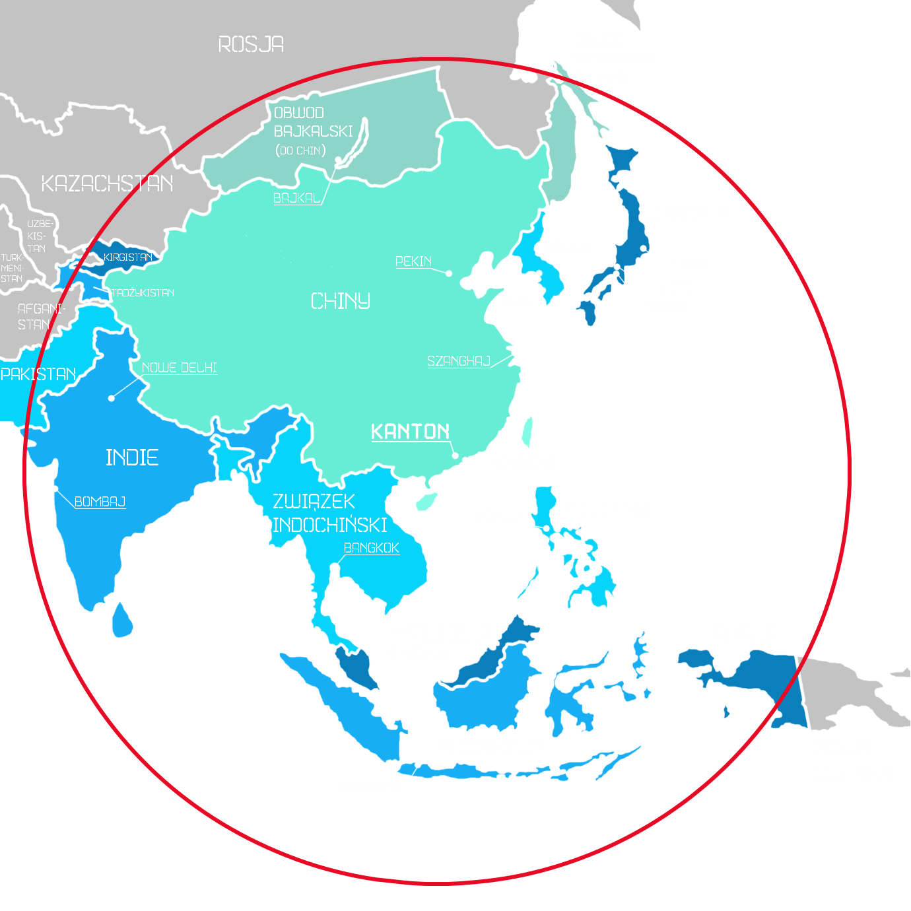

_
Guangzhou
Krótki wstęp
III Wojna Światowa zakończyła wygląd świata, jaki znaliśmy. Stary Kontynent, Czarny Ląd i Nowy Świat istnieją dla nas już tylko na kartach historii.
Teraz, naszą jedyną ostoją pozostał Daleki Wschód chroniony przed promieniowaniem jądrowym przez pole magnetyczne - wielki na pół globu cud
technologii, którego stworzenie uwarunkowane było niepokojem przed zagładą całej ludzkości, i uruchomione w ostatniej chwili, tuż przed wybuchem
wojny. Jest dziełem najwybitniejszych naukowców, którzy jednak za nasze życie zapłacili własnym. My także zapłaciliśmy cenę - słońce i niebo są dla
nas tylko wspomnieniem. Witamy w 2230 roku w podziemnym Kantonie, w świecie, który przeoczyła śmierć.

Oto cały nasz świat. W przeciągu ostatnich dwóch wieków nastąpiło wiele zmian w podziale politycznym. Wyróżnione państwa i terytoria
połączone są jedną unią. Zaznaczone na zielono Chiny są państwem-matką, a pozostałe państwa to republiki. Czerwony okrąg stanowi
granicę strefy bezpiecznej, poza którą promieniowanie jest zbyt wysokie, aby można było tam żyć.
Historia świata
- 2057 - denuklearyzacja Indii
- 2095 - denuklearyzacja Korei Północnej
- 2130 - rozpad Unii Europejskiej
- 2169 - powstanie unii państw Półwyspu Indochińskiego
- 2174 - zjednoczenie się Korei
- 2178 - rozpoczęcie przez Chiny badań naukowych nad wysokoenergetycznymi polami magnetycznymi
- 2183 - zawiązanie sojuszu chińsko-indyjskiego
- 2184 - rozpad Papui-Nowej Gwinei na dwa osobne państwa
- 2189 - dołączenie się Japonii, Korei oraz Wietnamu do sojuszu
- 2090 - denuklearyzacja Pakistanu
- 2191 - przyłączenie się Nepalu, Laos, Mongolii i 12 innych panstw do sojuszu
- 25 marca 2191 - powstanie Unii Słońca
- 17 października 2200 - atak Rosji na Białoruś i Litwę przy użyciu bomb atomowych oraz aneksja tych państw
- 18 października 2200 - atak Rosji na Polskę i Finlandię
- 19 października 2200 - reakcja NATO na ataki, spuszczenie bomby atomowej na Moskwę po trzech apelach do natychmiastowej
kapitulacji wojsk rosyjskich
- 1 listopada 2200 - konfederacja państw Unii Słońca w Kantonie
- 3 listopada 2200 - mianowanie Kantonu nową stolicą Chin
- 4 lipca 2201 - nałożenie pola magnetycznego obejmującego państwa Unii Słońca
- 10 lipca 2201 - początek III wojny światowej
- 11 lipca 2201 - spuszczenie bomby atomowej na Nowy Jork i Waszyngton
- 14 lipca 2201 - atak na Niemcy, spuszczenie 5 bomb atomowych na terenie Rosji
- 15 lipca 2201 - odezwa zbrojna państw Środkowej Europy
- 16 lipca 2201 - Rosja spuszcza bombę atomową na Berlin, Warszawę oraz Paryż
- 27 lipca 2201 - masowy atak atomowy na Rosję ze strony amerykańskich baz z całego świata
- 30 lipca 2201 - odzew rosyjskich baz
- 30 lipca 2201 - rozpad NATO
- 2202 - masowe migracje ludności z Europy i Ameryky Północnej do Azji
- 5 sierpnia 2203 - rozpad ONZ
- 19 listopada 2209 - utworzenie i oddanie Chinom przez rosję Obwodu Bajlaksiego i Kamczackiego w ramach sanckji
- 22 listopada 2209 - zmiana nazwy miasta Irkuck na Bajkal
- 29 grudnia 2212 - zanik jakichkolwiek walk na terenie Europy i Ameryki Północnej; oficjalne zakończenie się III wojny
światowej
- 1 sierpnia 2222 - zakaz wyjazdu mieszkańców Unii Słońca poza pole magnetyczne nazwane Komaną
- 2 sierpnia 2222 - zjednoczenie się Unii Słońca w Cesarstwo Czetongo z Chinami jako państwem matką i stolicą w Kantonie
- 24 sierpnia 2222 - przyłączenie się Mongolii, Bhutanu i Nepalu do Chin
- 29 sierpnia 2222 - publikacja praw robota
- 12 września 2222 - uchwalenie dekretu dot. budowy podziemnych miast ze względu na przeludnienie obszaru Czetongo
- 13 września (piątek) 2222 - podział społeczeństwa na kasty wg stanu majątkowego
- 5 grudnia 2222 - ukończenie budowy podziemnego Kantonu, Pekinu, Hongkongu, Seulu, Tokio, Szanghaju i Nowego Delhi
- 6 grudnia 2222 - ukończenie budowy podziemnego Mumbaju, Kioto, Singapuru i 5 innych miast oraz utworzenie sieci komunikacyjnej
między nimi
- 13 grudnia 2222 (piątek) - przesiedlenia ludności niższej i średniej kasty do podziemnych miast
- 7 sierpnia 2225 roku - mianowanie pierwszego cesarza Czetongo - Min Er
Hana (w skrócie meh)
Niezbędnik
Podstawowe parametry
| str |
siła |
łącznie 12,
max 5
na jedno |
| dex |
zręczność |
| obs |
spostrzegawczość |
| int |
inteligencja |
| cha |
charyzma |
| HP |
puknty życia |
9 |
| ENE |
energia |
5 |
| G |
złoto |
0 |
| LP |
los |
3 |
| ML |
poziom stresu |
0 |
Umiejętności specjalne
| sprint |
łącznie 4,
użycie
kosztuje
1ENE |
| walka wręcz |
| celność |
| dedukcja |
| maskowanie się |
Dodatkowe atrybuty
| lęk |
dowolny, do
zatwierdzenia
przez GM |
| cel |
dowolny |
| profesja |
dowolna, do
zatwierdzenia
przez GM |
| życiorys |
dowolny |
| headstart |
do wyboru:
- 3G
- 3LP
- duży przedmiot
(dodający do
statów)
- przedmiot
inaczej
wspomagający
śmiałka, do
zatwierdzenia
przez GM
|
Charakteryzatory
- Bojowy:
+2STR podczas walki. Za wygraną walkę nie traci energii. Dopiero 4 małe rany liczą się dla
niego jako duża rana.
- Honorowy:
Może dwa razy wydać LP na przerzut kości w walce. Przegrywając ją, traci tylko połowę wymaganej
energii.
- Błyskotliwy:
+2INT, przy dokonywaniu zwiadu otrzymuje +1 do wartości dedukcji i maskowania.
- Przyjazny:
+2CHA, za zaprzyjaźnienie postaci występującej w grze, wyrzuciwszy na kostce przynajmniej 8,
otrzymuje od postaci 1G oraz traci 1ML. Otrzymuje jednak +1ML po każdej walce.
- Wytrzymały:
Jego maksymalne ENE zwiększone jest o 1, nie traci ENE przy sprincie.
- Nocny marek:
Śpiąc 6 godzin otrzymuje 2ENE, 4 godziny - 1ENE.
- Demagog:
+1CHA, łatwiej mu przekonać postacie występujące w grze do swojej racji. Do
przekonywania otrzymuje modyfikator +2CHA.
- Spostrzegawczy:
+2OBS, może liczyć na podpowiedzi od GM.
- Gibki:
+2DEX, zamiast walczyć wręcz może unikać ciosów. Aby wykonać tą akcję, sumuje wartość
swojego DEX i rzutu kostką. Gdy jego wynik jest wyższy od 10, wygrywa walkę zamęczywszy wroga na tyle, żeby
spokojnie odejść. Zdolności tej można użyć najwyżej raz na dobę
- Wysportowany:
Otrzymuje po jednym dodatkowym punkcie do wybranych przez siebie dwóch umiejętności
- Szczęściarz:
Limit jego LP jest zwiększony o 1. Gdy w wyniku źle trzymanej warty stanie się coś
nieprzyjemnego, może rzucic kostką raz, nie zużywając LP. Wyrzucenie conajmniej 8 skutkuje ominięciem przez niego skutków
wydarzenia.
- Alkoholik:
Posiada piersiówkę z alkoholem, który jednorazowo podnosi jego CHA o 2 lub pozwala na
przerzut kości nie marnując LP. Pojemnik ma pojemność 2 racji i może zostać ponownie napełniony. Gdy alkoholik 2 dni z rzędu nie
zażywa alkoholu, otrzymuje modyfikator -1 do DEX, INT, CHA i +1ML. Jedna porcja odkaża dwie małe rany.
- Zręczne dłonie:
Gdy śmiałkowie mają do tego materiały, leczy skuteczniej niż inni. Postawione przez niego
budowle lub zrobione przedmioty są trwalsze niż wykonane przez pozostałych śmiałków.
- Spryciarz:
Może próbować ukraść przedmiot. W tym celu, sumuje swoją DEX oraz wynik na kości.
Gdy wynik jest wyższy od 9, kradzież przebiega pomyślnie.
- Sadysta:
-1CHA. Gdy zabije lub pokona w walce człowieka, może się nad nim pastwić aby odzyskać
1ENE. Może żywić się ludzkim mięsem, w odróżnieniu od pozostałych śmiałków, których to brzydzi.
- Mężny:
+2STR, na warcie może stać sam aby przebiegła pomyślnie
- Leniuch:
Może spać w dzień aby odzyskać 1ENE w dowolnym momencie gry. Spanie podczas walki nie
jest gwarancją jej przeżycia :)
- Geniusz:
+2 dedukcji, +1 do INT, OBS. Modyfikator "tchórzliwy" - nie może stać na wartach, boi się
też wychodzić poza obóz sam.
- Religijny:
+1CHA, może szerzyć dowolną religię. Gdy nawróci na nią jakąś postać, otrzymuje
1G. Może modlić się o powodzenie jakiejś akcji innego śmiałka - wówczas wyrzucenie 9 również przynosi przerzut i jest
traktowane jak 10.
- Stoik:
+1OBS, -1CHA. Ignoruje efekty pierwszego poziomu stresu. Nie każda walka podnosi poziom
stresu. Może przeszukiwać trupy w celu znalezienia ciekawych przedmiotów.
Mechanizmy
- Sen:
Spanie 8 godzin regeneruje 2ENE, 6 godzin regeneruje 1ENE, sen 4 godzinny nie regeneruje
ENE, a spanie mniej niż 4 godziny zabiera 1ENE. Gdy śmiałek śpi dwie noce z rzędu 4 lub mniej godzin otrzymuje
modyfikator -1 do str, dex, obs, int oraz cha.
- Walka:
Suma STR, walki wręcz oraz wyniku rzutu kostką.
- Zwiad:
Suma INT, OBS, maskowania, dedukcji oraz wyniku rzutu kostką.
- Warta:
Jedna warta trwa dwie godziny. Aby warta była bezpieczna, należy wystawić dwóch wartowników. Gdy warta
składa się z dwóch osob, po upływie dwóch godzin budzi następną warte. Gdy wartownik jest jeden, rzuca kostką której nie może
przerzucić. Gdy wypadnie przynajmniej 5, to wartownik zasypia po godzinie warty i resztę nocy śmiałkowie spędzają bez ochrony.
- Ucieczka:
Suma DEX, sprintu oraz wyniku rzutu kostką.
- Obrażenia:
Każdy śmiałek może otrzymać 9 lekkich ran; każde 3 lekkie rany są traktowane jak 1 ciężka rana która
wprowadza modyfikator -1STR i DEX.
- Stres:
ML wzrasta po każdej walce, po nieudanym rzucie kostką (1, 2 lub 3), po otrzymaniu ciężkiej rany (tylko
poza walką) i po spaniu najwyżej 4 godziny dwie doby (niekoniecznie z rzędu). Natomiast spada po spaniu 8 godzin, po rzucie kostką z
przerzutem oraz z czasem. Poziom 1 powoduje modyfikator -1CHA, OBS, poziom 2 przynosi modyfikator -2CHA, OBS,
-1INT, a poziom 3 przenosi modyfikator z poziomu 2, plus za sen otrzymuje się o 1 mniej energii (tj. +1ENE za 8 godzin,
+0ENE za 6 godzin, -1ENE za 4 godziny i -2ENE za mniej niż 4 godziny).